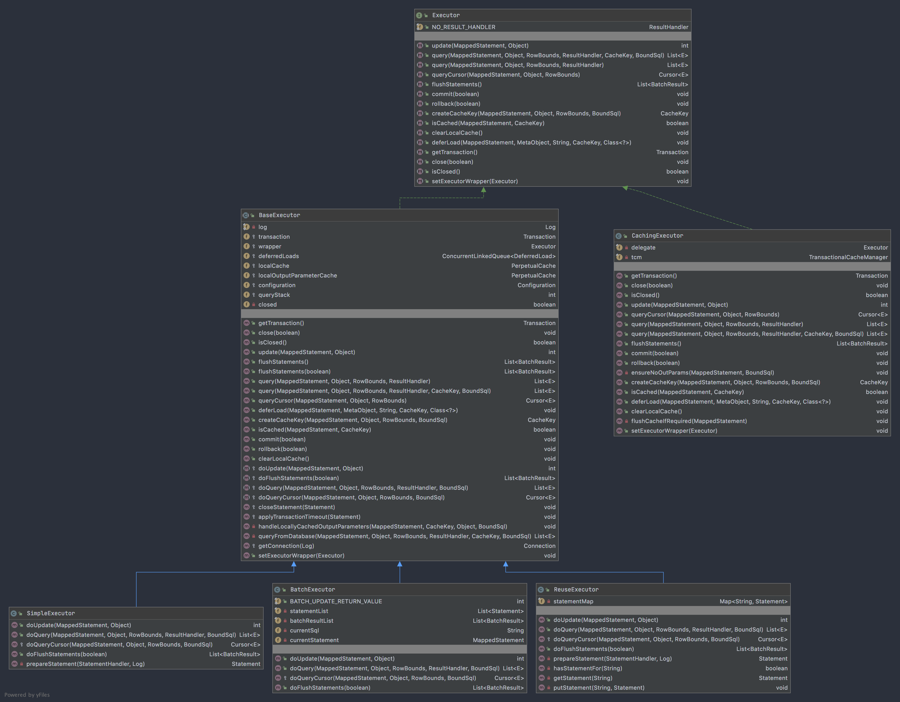
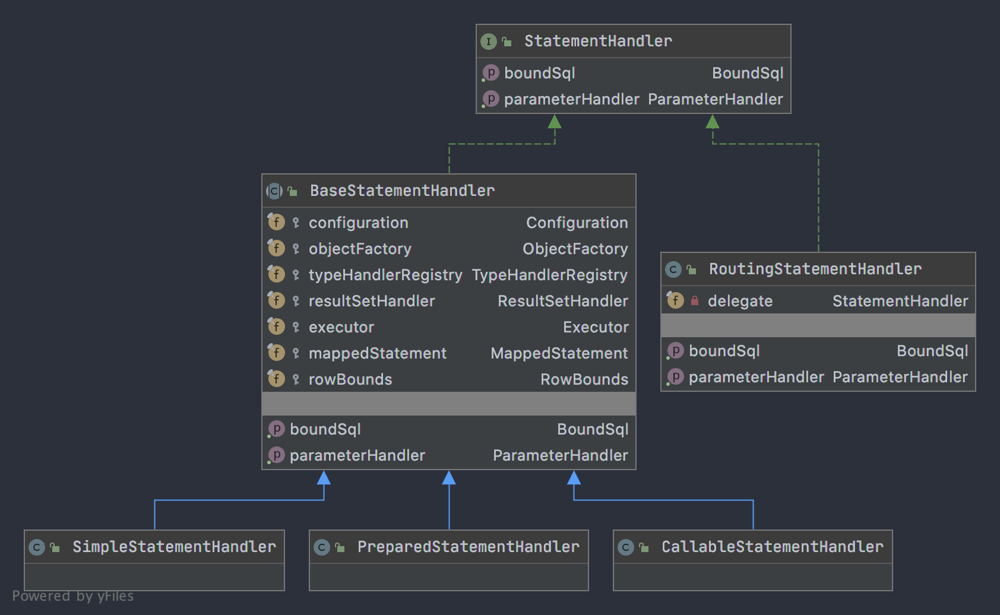

MyBatis运行流程之配置初始化
首先了解下大致流程
 配置初始化
配置初始化
在MyBatis中负责加载配置文件的核心类有三个:
- BaseBuilder：所有解析器的父类，包含配置文件实例，为解析文件提供的一些通用的方 法；
- XMLConfigBuilder： 主要负责解析 mybatis-config.xml全局配置文件，将相关配置放入Configuration对象中；
- XMLMapperBuilder： 主要负责解析映射配置 Mapper.xml 文件，填充Configuration的caches、resultMappings；
- XMLStatementBuilder： 主要负责解析映射配置文件中的 INSERT、UPDATE、DELETE、SELECT 节点，填充Configuration的MappedStatement；
UML类图如下所示：
 配置文件加载继承关系
配置文件加载继承关系
XMLConfigBuilder、XMLMapperBuilder、XMLStatementBuilder 这三个类在配置文件加载过程中非常重要，另外MapperBuilderAssistant可辅助XMLMapperBuilder和XMLStatementBuilder完成配置工作。
Configuration对象
实例化并初始化 Configuration 对象是第一个阶段的最终目的，所以熟悉 configuration 对象是理解这一阶段代码的核心；
看下Configuration对象中的关键属性：
- MapperRegistry：mapper 接口动态代理工厂类的注册中心。在 MyBatis 中，通过 mapperProxy 实现 InvocationHandler 接口，MapperProxyFactory 用于生成动态代理的实 例对象；
- ResultMap：用于解析 mapper.xml 文件中的 resultMap 节点，使用 ResultMapping 来封装 id，result 等子元素；
- MappedStatement：用于存储 mapper.xml 文件中的 select、 insert、 update 和 delete 节点， 同时还包含了这些节点的很多重要属性；
- SqlSource：用于创建 BoundSql，mapper.xml 文件中的 sql 语句会被解析成 BoundSql 对象，经过解析 BoundSql 包含的语句最终仅仅包含？占位符，可以直接提交给数据库执行；
public class Configuration {
/*数据库环境**/
protected Environment environment;
/* 是否启用行内嵌套语句**/
protected boolean safeRowBoundsEnabled;
protected boolean safeResultHandlerEnabled = true;
/* 是否启用数据组A_column自动映射到Java类中的驼峰命名的属性**/
protected boolean mapUnderscoreToCamelCase;
/*当对象使用延迟加载时 属性的加载取决于能被引用到的那些延迟属性,否则,按需加载(需要的是时候才去加载)**/
protected boolean aggressiveLazyLoading;
/*是否允许单条sql 返回多个数据集 (取决于驱动的兼容性) default:true **/
protected boolean multipleResultSetsEnabled = true;
/*-允许JDBC 生成主键。需要驱动器支持。如果设为了true，这个设置将强制使用被生成的主键，有一些驱动器不兼容不过仍然可以执行。 default:false**/
protected boolean useGeneratedKeys;
/* 使用列标签代替列名。不同的驱动在这方面会有不同的表现， 具体可参考相关驱动文档或通过测试这两种不同的模式来观察所用驱动的结果。**/
protected boolean useColumnLabel = true;
/*配置全局性的cache开关，默认为true**/
protected boolean cacheEnabled = true;
protected boolean callSettersOnNulls;
protected boolean useActualParamName = true;
protected boolean returnInstanceForEmptyRow;
/* 日志打印所有的前缀 **/
protected String logPrefix;
/* 指定 MyBatis 所用日志的具体实现，未指定时将自动查找**/
protected Class<? extends Log> logImpl;
/*虚拟文件系统实现*/
protected Class<? extends VFS> vfsImpl;
/* 设置本地缓存范围，session：就会有数据的共享，statement：语句范围，这样不会有数据的共享**/
protected LocalCacheScope localCacheScope = LocalCacheScope.SESSION;
/* 设置但JDBC类型为空时,某些驱动程序 要指定值**/
protected JdbcType jdbcTypeForNull = JdbcType.OTHER;
/* 设置触发延迟加载的方法**/
protected Set<String> lazyLoadTriggerMethods = new HashSet<>(Arrays.asList("equals", "clone", "hashCode", "toString"));
/* 设置驱动等待数据响应超时数**/
protected Integer defaultStatementTimeout;
/* 设置驱动返回结果数的大小**/
protected Integer defaultFetchSize;
protected ResultSetType defaultResultSetType;
/* 执行类型，有simple、resue及batch**/
protected ExecutorType defaultExecutorType = ExecutorType.SIMPLE;
/*指定 MyBatis 应如何自动映射列到字段或属性*/
protected AutoMappingBehavior autoMappingBehavior = AutoMappingBehavior.PARTIAL;
protected AutoMappingUnknownColumnBehavior autoMappingUnknownColumnBehavior = AutoMappingUnknownColumnBehavior.NONE;
// 在<properties>标签下的属性以及
protected Properties variables = new Properties();
protected ReflectorFactory reflectorFactory = new DefaultReflectorFactory();
/*MyBatis每次创建结果对象的新实例时，它都会使用对象工厂（ObjectFactory）去构建POJO*/
protected ObjectFactory objectFactory = new DefaultObjectFactory();
protected ObjectWrapperFactory objectWrapperFactory = new DefaultObjectWrapperFactory();
/*延迟加载的全局开关*/
protected boolean lazyLoadingEnabled = false;
/*指定 Mybatis 创建具有延迟加载能力的对象所用到的代理工具*/
protected ProxyFactory proxyFactory = new JavassistProxyFactory(); // #224 Using internal Javassist instead of OGNL
protected String databaseId;
/**
* 创建用于加载反序列化未读属性的配置。
*/
protected Class<?> configurationFactory;
/*插件集合，plugins标签容器*/
protected final InterceptorChain interceptorChain = new InterceptorChain();
/*TypeHandler注册中心*/
protected final TypeHandlerRegistry typeHandlerRegistry = new TypeHandlerRegistry(this);
/*TypeAlias注册中心*/
protected final TypeAliasRegistry typeAliasRegistry = new TypeAliasRegistry();
protected final LanguageDriverRegistry languageRegistry = new LanguageDriverRegistry();
/*mapper接口的动态代理注册中心*/
protected final MapperRegistry mapperRegistry = new MapperRegistry(this);
/*mapper文件中增删改查操作的注册中心*/
protected final Map<String, MappedStatement> mappedStatements = new StrictMap<MappedStatement>("Mapped Statements collection")
.conflictMessageProducer((savedValue, targetValue) -> ". please check " + savedValue.getResource() + " and " + targetValue.getResource());
/*mapper文件中配置cache节点的 二级缓存*/
protected final Map<String, Cache> caches = new StrictMap<>("Caches collection");
/*mapper文件中配置的所有resultMap对象 key为命名空间+ID*/
protected final Map<String, ResultMap> resultMaps = new StrictMap<>("Result Maps collection");
/*mapper文件中配置所有的parameterMap对象，key为命名空间+ID*/
protected final Map<String, ParameterMap> parameterMaps = new StrictMap<>("Parameter Maps collection");
/*mapper文件中配置KeyGenerator的insert和update节点，key为命名空间+ID*/
protected final Map<String, KeyGenerator> keyGenerators = new StrictMap<>("Key Generators collection");
/*加载到的所有*mapper.xml文件*/
protected final Set<String> loadedResources = new HashSet<>();
/*mapper文件中配置的sql元素，key为命名空间+ID*/
protected final Map<String, XNode> sqlFragments = new StrictMap<>("XML fragments parsed from previous mappers");
protected final Collection<XMLStatementBuilder> incompleteStatements = new LinkedList<>();
protected final Collection<CacheRefResolver> incompleteCacheRefs = new LinkedList<>();
protected final Collection<ResultMapResolver> incompleteResultMaps = new LinkedList<>();
protected final Collection<MethodResolver> incompleteMethods = new LinkedList<>();
/*
* key: 在哪个namespace中声明
* value: 引用哪个namespace中的cache
*/
protected final Map<String, String> cacheRefMap = new HashMap<>();
}
配置加载过程
MyBatis配置加载的过程大致可如下图所示：
 Mysql初始化
Mysql初始化
现在看下配置加载的核心代码：
通过 SqlSessionFactoryBuilder 建造 SqlSessionFactory，并创建 XMLConfigBuilder 对象读取 MyBatis 核心配置文件，
public SqlSessionFactory build(Reader reader, String environment, Properties properties) {
try {
//1、读取配置文件
XMLConfigBuilder parser = new XMLConfigBuilder(reader, environment, properties);
//1.1、解析配置文件得到configuration对象，并返回SqlSessionFactory的实现DefaultSqlSessionFactory
return build(parser.parse());
} catch (Exception e) {
throw ExceptionFactory.wrapException("Error building SqlSession.", e);
} finally {
ErrorContext.instance().reset();
try {
// 关闭输入流
reader.close();
} catch (IOException e) {
// Intentionally ignore. Prefer previous error.
}
}
}
XMLConfigBuilder 的 parseConfiguration 方法，对 MyBatis 核心配置文件的各个 元素进行解析，读取元素信息后填充到 configuration 对象
/**
* 解析mybatis-config.xml文档
*
* @param root mybatis-config.xml的root节点configuration
*/
private void parseConfiguration(XNode root) {
try {
// issue #117 read properties first
/* 解析<properties>节点,填充configuration的variables属性*/
propertiesElement(root.evalNode("properties"));
/* 解析<settings>节点*/
Properties settings = settingsAsProperties(root.evalNode("settings"));
/*VFS含义是虚拟文件系统；主要是通过程序能够方便读取本地文件系统、FTP文件系统等系统中的文件资源。*/
loadCustomVfs(settings);
loadCustomLogImpl(settings);
/*解析<typeAliases>节点，填充Configuration的typeAliasRegistry属性*/
typeAliasesElement(root.evalNode("typeAliases"));
/*解析<plugins>节点*，填充Configuration的interceptorChain属性/
pluginElement(root.evalNode("plugins"));
/*解析ObjectFactory*/
objectFactoryElement(root.evalNode("objectFactory"));
/*解析<objectWrapperFactory>节点*/
objectWrapperFactoryElement(root.evalNode("objectWrapperFactory"));
/*解析<reflectorFactory>节点*/
reflectorFactoryElement(root.evalNode("reflectorFactory"));
/*将settings填充到configuration*/
settingsElement(settings);
/*解析<environments>节点，填充Configuration的environment*/
environmentsElement(root.evalNode("environments"));
//解析<databaseIdProvider>节点
databaseIdProviderElement(root.evalNode("databaseIdProvider"));
/*解析<typeHandlers>节点，填充Configuration的typeHandlerRegistry*/
typeHandlerElement(root.evalNode("typeHandlers"));
/*解析mapper节点*/
mapperElement(root.evalNode("mappers"));
} catch (Exception e) {
throw new BuilderException("Error parsing SQL Mapper Configuration. Cause: " + e, e);
}
}
XMLMapperBuilder 的核心方法为 configurationElement（XNode），该方法对 mapper.xml 配置文件的各个元素进行解析，读取元素信息后填充到 configuration 对象。
/**
* 解析Mapper.xml文件
**/
private void configurationElement(XNode context) {
try {
// 获取mapper.xml 的 namespace 名字
String namespace = context.getStringAttribute("namespace");
if (namespace == null || namespace.isEmpty()) {
throw new BuilderException("Mapper's namespace cannot be empty");
}
//设置builderAssistant的namespace属性
builderAssistant.setCurrentNamespace(namespace);
cacheRefElement(context.evalNode("cache-ref"));
/* 1. 分析缓存cache节点，二级缓存 configuration.addCache(cache);*/
cacheElement(context.evalNode("cache"));
parameterMapElement(context.evalNodes("/mapper/parameterMap"));
/* 2. 分析 ：解析resultMap节点，填充Configuration的 resultMap*/
resultMapElements(context.evalNodes("/mapper/resultMap"));
/* 3. 解析sql节点*/
sqlElement(context.evalNodes("/mapper/sql"));
/* 4. 解析select、insert、update、delete节点 ，填充Configuration的 MappedStatement*/
buildStatementFromContext(context.evalNodes("select|insert|update|delete"));
} catch (Exception e) {
throw new BuilderException("Error parsing Mapper XML. The XML location is '" + resource + "'. Cause: " + e, e);
}
}
在 XMLStatmentBuilder 的 parseStatementNode()方法中，对 Mapper.xml 中 select、 insert、update、delete 节点进行解析，并调用 MapperBuilderAssistant 负责将信息填充到 configuration。在理解 parseStatementNod()方法之前，有必要了解 MappedStatement，这个类用于封装 select 、insert 、update 、delete 节点的信息
/**
* 封装mapper.xml文件信息的select 、insert 、update 、delete 节点的信息
* id、sqlSource、parameterMap、ResultMaps、keyGenerator
**/
public final class MappedStatement {
private String resource;//节点的完整的id属性，包括命名空间
private Configuration configuration;
private String id;//节点的id属性
private Integer fetchSize;//节点的fetchSize属性,查询数据的条数
private Integer timeout;//节点的timeout属性，超时时间
private StatementType statementType;//节点的statementType属性,默认值：StatementType.PREPARED
private ResultSetType resultSetType;//节点的resultSetType属性,jdbc知识
private SqlSource sqlSource;//节点中sql语句信息
private Cache cache;//对应的二级缓存
private ParameterMap parameterMap;
private List<ResultMap> resultMaps;//节点的resultMaps属性
private boolean flushCacheRequired;//节点的flushCache属性是否刷新缓存
private boolean useCache;//节点的useCache属性是否使用二级缓存
private boolean resultOrdered;
private SqlCommandType sqlCommandType;//sql语句的类型，包括：INSERT, UPDATE, DELETE, SELECT
private KeyGenerator keyGenerator;//节点keyGenerator属性
private String[] keyProperties;
private String[] keyColumns;
private boolean hasNestedResultMaps;//是否有嵌套resultMap
private String databaseId;
private Log statementLog;
private LanguageDriver lang;
private String[] resultSets;//多结果集使用
}
mybatis运行流程之代理封装
在经过第一阶段之后，MyBatis的Configuration已经初始化完毕，接下来进入第二阶段，获取SqlSessijon和Mapper接口代理类。
其执行的过程如下图所示：
 mybatis获取mapper代理
mybatis获取mapper代理
MyBatis的接口层
SqlSession
第一个对象就是 SqlSession，SqlSession 是 MyBaits 对外提供的最关键的核心接口，通过它可以执行数据库读写命令、获取映射器、管理事务等；SqlSession 也 意味着客户端与数据库的一次连接，客户端对数据库的访问请求都是由SqlSession来处理的， SqlSession 由 SqlSessionFactory 创建，每个 SqlSession 都会引用 SqlSessionFactory 中全局唯一单例存在的 configuration 对象；
SqlSession 默认实现类为 org.apache.ibatis.session.defaults.DefaultSqlSession,是 MyBatis 对外提供数据访问的主要 API。如下图所示，sqlSession是围绕着Executor在运转的。
 SqlSession
SqlSession
SqlSessionFactory
SqlSessionFactory 使用工厂模式创建 SqlSession，其默认的实现类为 DefaultSqlSessionFactory ，其中获取 SqlSession 的核心方法为openSessionFromDataSource(ExecutorType, TransactionIsolationLevel, boolean)，在这个方法中从 configuration 中获取的 TransactionFactory 是典 型的策略模式的应用。运行期，TransactionFactory 接口的实现，是由配置文件配置决定的，可配置选项包括： JDBC、Managed, 可根据需求灵活的替换 TransactionFactory 的实现。
private SqlSession openSessionFromDataSource(ExecutorType execType, TransactionIsolationLevel level, boolean autoCommit) {
Transaction tx = null;
try {
//获取mybatis配置文件中的environment对象
final Environment environment = configuration.getEnvironment();
//从environment获取transactionFactory工厂对象
final TransactionFactory transactionFactory = getTransactionFactoryFromEnvironment(environment);
//创建事务对象
tx = transactionFactory.newTransaction(environment.getDataSource(), level, autoCommit);
//根据配置创建executor
final Executor executor = configuration.newExecutor(tx, execType);
//创建DefaultSqlSession
return new DefaultSqlSession(configuration, executor, autoCommit);
} catch (Exception e) {
closeTransaction(tx); // may have fetched a connection so lets call close()
throw ExceptionFactory.wrapException("Error opening session. Cause: " + e, e);
} finally {
ErrorContext.instance().reset();
}
}
Mapper接口
在使用 Mapper 接口编程的时候，实际上 MyBatis 的内部，将对 Mapper 接口的调用转发给了 SqlSession，这个请求的转发是建立在 配置文件解读、动态代理增强的基础之上实现的，实现的过程有三个关键要素：
- 找到 SqlSession 中对应的方法执行；
- 找到命名空间和方法名（两维坐标）
- 传递参数
如何获取Mapper接口
了解binding模块中如下几个关键类：
- MapperRegistry
mapper 接口和对应的代理对象工厂的注册中心；
/**
* mapper 接口动态代理工厂类的注册中心。
*/
public class MapperRegistry {
private final Configuration config;
// 存放MapperProxyFactory
private final Map<Class<?>, MapperProxyFactory<?>> knownMappers = new HashMap<>();
public MapperRegistry(Configuration config) {
this.config = config;
}
@SuppressWarnings("unchecked")
public <T> T getMapper(Class<T> type, SqlSession sqlSession) {
final MapperProxyFactory<T> mapperProxyFactory = (MapperProxyFactory<T>) knownMappers.get(type);
if (mapperProxyFactory == null) {
throw new BindingException("Type " + type + " is not known to the MapperRegistry.");
}
try {
return mapperProxyFactory.newInstance(sqlSession);
} catch (Exception e) {
throw new BindingException("Error getting mapper instance. Cause: " + e, e);
}
}
public <T> boolean hasMapper(Class<T> type) {
return knownMappers.containsKey(type);
}
public <T> void addMapper(Class<T> type) {
if (type.isInterface()) {
if (hasMapper(type)) {
throw new BindingException("Type " + type + " is already known to the MapperRegistry.");
}
boolean loadCompleted = false;
try {
knownMappers.put(type, new MapperProxyFactory<>(type));
MapperAnnotationBuilder parser = new MapperAnnotationBuilder(config, type);
parser.parse();
loadCompleted = true;
} finally {
if (!loadCompleted) {
knownMappers.remove(type);
}
}
}
}
public Collection<Class<?>> getMappers() {
return Collections.unmodifiableCollection(knownMappers.keySet());
}
public void addMappers(String packageName, Class<?> superType) {
ResolverUtil<Class<?>> resolverUtil = new ResolverUtil<>();
resolverUtil.find(new ResolverUtil.IsA(superType), packageName);
Set<Class<? extends Class<?>>> mapperSet = resolverUtil.getClasses();
for (Class<?> mapperClass : mapperSet) {
addMapper(mapperClass);
}
}
public void addMappers(String packageName) {
addMappers(packageName, Object.class);
}
}
- MapperProxyFactory
用于生成 mapper 接口动态代理的实例对象；保证 Mapper 实例对象是局部变量；
public class MapperProxyFactory<T> {
private final Class<T> mapperInterface;
private final Map<Method, MapperMethodInvoker> methodCache = new ConcurrentHashMap<>();
public MapperProxyFactory(Class<T> mapperInterface) {
this.mapperInterface = mapperInterface;
}
public Class<T> getMapperInterface() {
return mapperInterface;
}
public Map<Method, MapperMethodInvoker> getMethodCache() {
return methodCache;
}
protected T newInstance(MapperProxy<T> mapperProxy) {
return (T) Proxy.newProxyInstance(mapperInterface.getClassLoader(), new Class[]{mapperInterface}, mapperProxy);
}
public T newInstance(SqlSession sqlSession) {
final MapperProxy<T> mapperProxy = new MapperProxy<>(sqlSession, mapperInterface, methodCache);
return newInstance(mapperProxy);
}
}
- MapperProxy
实现了 InvocationHandler 接口，它是增强 mapper 接口的实现；
public class MapperProxy<T> implements InvocationHandler, Serializable {
private static final long serialVersionUID = -4724728412955527868L;
private static final int ALLOWED_MODES = MethodHandles.Lookup.PRIVATE | MethodHandles.Lookup.PROTECTED
| MethodHandles.Lookup.PACKAGE | MethodHandles.Lookup.PUBLIC;
private static final Constructor<Lookup> lookupConstructor;
private static final Method privateLookupInMethod;
//记录关联的sqlsession对象
private final SqlSession sqlSession;
//mapper接口对应的class对象；
private final Class<T> mapperInterface;
//key是mapper接口中的某个方法的method对象，value是对应的MapperMethodInvoker，封装了MapperMethod，MapperMethod对象不记录任何状态信息，所以它可以在多个代理对象之间共享
private final Map<Method, MapperMethodInvoker> methodCache;
public MapperProxy(SqlSession sqlSession, Class<T> mapperInterface, Map<Method, MapperMethodInvoker> methodCache) {
this.sqlSession = sqlSession;
this.mapperInterface = mapperInterface;
this.methodCache = methodCache;
}
@Override
public Object invoke(Object proxy, Method method, Object[] args) throws Throwable {
try {
if (Object.class.equals(method.getDeclaringClass())) {
return method.invoke(this, args);
} else {
return cachedInvoker(method).invoke(proxy, method, args, sqlSession);
}
} catch (Throwable t) {
throw ExceptionUtil.unwrapThrowable(t);
}
}
private MapperMethodInvoker cachedInvoker(Method method) throws Throwable {
try {
return methodCache.computeIfAbsent(method, m -> {
if (m.isDefault()) {
try {
if (privateLookupInMethod == null) {
return new DefaultMethodInvoker(getMethodHandleJava8(method));
} else {
return new DefaultMethodInvoker(getMethodHandleJava9(method));
}
} catch (IllegalAccessException | InstantiationException | InvocationTargetException
| NoSuchMethodException e) {
throw new RuntimeException(e);
}
} else {
return new PlainMethodInvoker(new MapperMethod(mapperInterface, method, sqlSession.getConfiguration()));
}
});
} catch (RuntimeException re) {
Throwable cause = re.getCause();
throw cause == null ? re : cause;
}
}
interface MapperMethodInvoker {
Object invoke(Object proxy, Method method, Object[] args, SqlSession sqlSession) throws Throwable;
}
private static class PlainMethodInvoker implements MapperMethodInvoker {
private final MapperMethod mapperMethod;
public PlainMethodInvoker(MapperMethod mapperMethod) {
super();
this.mapperMethod = mapperMethod;
}
@Override
public Object invoke(Object proxy, Method method, Object[] args, SqlSession sqlSession) throws Throwable {
return mapperMethod.execute(sqlSession, args);
}
}
private static class DefaultMethodInvoker implements MapperMethodInvoker {
private final MethodHandle methodHandle;
public DefaultMethodInvoker(MethodHandle methodHandle) {
super();
this.methodHandle = methodHandle;
}
@Override
public Object invoke(Object proxy, Method method, Object[] args, SqlSession sqlSession) throws Throwable {
return methodHandle.bindTo(proxy).invokeWithArguments(args);
}
}
}
- MapperMethod
封装了 Mapper 接口中对应方法的信息，以及对应的 sql 语句的信息； 它是 mapper 接口与映射配置文件中 sql 语句的桥梁； MapperMethod 对象不记录任何 状态信息，所以它可以在多个代理对象之间共享；MapperMethod 内几个关键数据结构：
- SqlCommand 从 configuration 中获取方法的命名空间.方法名以及 SQL 语句的类型；
//sql节点的id： namespace+方法名
private final String name;
//是什么类型的sql（UNKNOWN, INSERT, UPDATE, DELETE, SELECT, FLUSH）
private final SqlCommandType type;
- MethodSignature：封装 mapper 接口方法的相关信息（入参，返回类型）和ParamNameResolver信息(解析 mapper 接口方法中的入参，将多个参数转成 Map)
看下MapperMethod的关键代码
public Object execute(SqlSession sqlSession, Object[] args) {
Object result;
//判断是那种类型的SQL语句
switch (command.getType()) {
case INSERT: {
//解析参数
Object param = method.convertArgsToSqlCommandParam(args);
result = rowCountResult(sqlSession.insert(command.getName(), param));
break;
}
case UPDATE: {
Object param = method.convertArgsToSqlCommandParam(args);
result = rowCountResult(sqlSession.update(command.getName(), param));
break;
}
case DELETE: {
Object param = method.convertArgsToSqlCommandParam(args);
result = rowCountResult(sqlSession.delete(command.getName(), param));
break;
}
case SELECT:
if (method.returnsVoid() && method.hasResultHandler()) {
executeWithResultHandler(sqlSession, args);
result = null;
} else if (method.returnsMany()) {
result = executeForMany(sqlSession, args);
} else if (method.returnsMap()) {
result = executeForMap(sqlSession, args);
} else if (method.returnsCursor()) {
result = executeForCursor(sqlSession, args);
} else {
Object param = method.convertArgsToSqlCommandParam(args);
result = sqlSession.selectOne(command.getName(), param);
if (method.returnsOptional()
&& (result == null || !method.getReturnType().equals(result.getClass()))) {
result = Optional.ofNullable(result);
}
}
break;
case FLUSH:
result = sqlSession.flushStatements();
break;
default:
throw new BindingException("Unknown execution method for: " + command.getName());
}
if (result == null && method.getReturnType().isPrimitive() && !method.returnsVoid()) {
throw new BindingException("Mapper method '" + command.getName()
+ " attempted to return null from a method with a primitive return type (" + method.getReturnType() + ").");
}
return result;
}
mybatis运行流程之数据访问阶段
在了解数据访问源码之前，先看下数据访问的时序图，如下图所示：
 MyBatis数据访问阶段
MyBatis数据访问阶段
ExeCutor组件
从图中看到访问数据是从SqlSession开始的，SqlSession的功能是给予ExeCutor来实现的，Executor是MyBatis的核心接口之一，定义了数据库操作的基本方法，遵循JDBC规范完成对数据库的访问，Executor类的继承关系如下图所示：
Executo
- ExeCutor
MyBatis核心接口之一，定义了数据库操作的基本方法
- CachingExecutor
使用装饰者模式，对真正提供数据库查询功能的Executor增强了二级缓存的能力，二级缓存在DefaultSqlSessionFactory.openSession()方法中完成初始化
- BaseExector
实现了Executor接口大部分方法的抽象类，主要提供了缓存管理和事务管理能力，其它子类需要实现的抽象方法为doUpdate、doQuery等方法
- BatchExeCutor
批量执行所有更新语句，在doQuery方法中实现批量执行多条SQL语句的能力，基于JDBC的batch操作实现批处理
- SimpleExecutor
默认执行器，在doQuery方法中使用PrepareStatement对象访问数据库，每次执行都会创建一个statement，用完后关闭。
- ReuseExecutor
可重用执行器，在doQuery方法中使用PrepareStatement对象访问数据库，将statement存入map中，操作map中的statement儿不会重复创建statement。
Executor依赖的三个重要类
通过对SimpleExecutor.doQuery方法的解读发现，Executor负责调度3个类来完成数据库的访问工作，这3个类如下：
- StatementHandler
使用数据库的Statement或PrepareStatement执行操作。
- ParameterHandler
对预编译的sql语句进行参数设置，sql语句中的占位符 '?' 对对应BoundSql.parameterMappings集合中的一个元素，在该对象中记录了对应的参数名称一级该参数的相关属性
- ResultSetHandler
对数据库返回的结果及ResultSet进行封装，返回用户指定的实体类型
 数据访问执行流程
数据访问执行流程
StatementHandler
StatementHandler完成MyBatis最核心的工作，功能包括创建statement对象，为sql语句绑定参数，执行增删改查等sql语句、将结果集映射进行转化等。
StatementHandle
- BaseStatementHandler
所有子类的抽象父类，定义了初始化 statement 的操作顺序，由 子类实现具体的实例化不同的 statement（模板模式）；
- RoutingStatementHandler
Executor 组件真正实例化的子类，使用静态代理模式，根据上下文决定创建哪个具体实体类
- RoutingStatementHandler 是在 Configuration 的 newStatementHandler 中创建的
- RoutingStatementHandler 在构造方法中， 根据上下文（配置）决定创建具体实现类
public RoutingStatementHandler(Executor executor, MappedStatement ms, Object parameter, RowBounds rowBounds, ResultHandler resultHandler, BoundSql boundSql) {
switch (ms.getStatementType()) {
case STATEMENT:
delegate = new SimpleStatementHandler(executor, ms, parameter, rowBounds, resultHandler, boundSql);
break;
case PREPARED:
delegate = new PreparedStatementHandler(executor, ms, parameter, rowBounds, resultHandler, boundSql);
break;
case CALLABLE:
delegate = new CallableStatementHandler(executor, ms, parameter, rowBounds, resultHandler, boundSql);
break;
default:
throw new ExecutorException("Unknown statement type: " + ms.getStatementType());
}
}
- SimpleStatmentHandler ：使用 statement 对象访问数据库，无须参数化；
- PreparedStatmentHandler ：使用预编译 PrepareStatement 对象访问数据库；
- CallableStatmentHandler ：调用存储过程；
ResultHandler
映射规则匹配
反射实例化对象
根据规则填充属性值